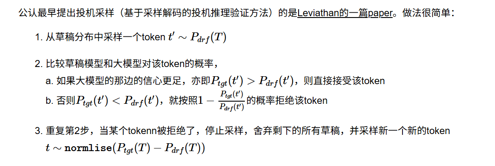
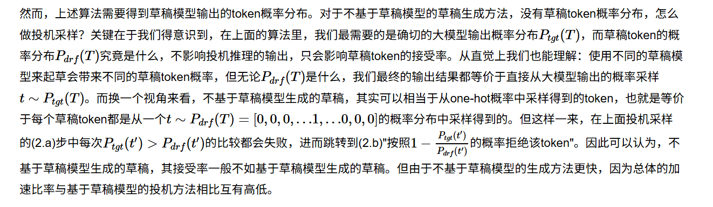

投机推理
背景介绍
投机推理的核心思想是所谓的“草稿-验证”范式：用小模型快速生成多个草稿token，然后用大模型去验证。如果验证通过率高就好办，低的话反而速度降低。
比如小模型生成了8个token，假设前5个token都没问题，到了第6个的时候发现与大模型的预测不一致，那旧舍弃第6到第8个，再利用大模型再去生成一个新的token。如此一来，我们利用8次小模型前向和一次大模型前向生成了6个token。
这在现实中确实存在这样的场景，有些token的预测就是简单任务，比如<bos>床前明月光，疑这个prompot后面大概率跟着是地上霜<eos>，这完全不需要大参数模型就能预测准确。
起草阶段
最早的时候，草稿模型就像在上面说的那样就是用一个跟目标模型同架构但参数规模小很多的模型，比如用T5-Large(800M)做T5-XXL(11B)的草稿模型，或者用Llama-2-7B作为LLaMA-2-70B的草稿模型。后来，人们得承认，想要又快又好地生成草稿token，那么训练一个专门的草稿模型才是是更好的方法，尽管训练过程并不简单，还需要不小的算力。
具体细节不谈，看参考文章，也都是一些模型的介绍和罗列。
验证阶段
一个非常关键的知识点：llm的一次forward不仅仅是预测下一个token，而是预测输入序列的每一个前缀子序列的下一个token。当我调用llm.forward(tok("床前明月"))的时候，llm不仅在预测床前明月的下一个token，它还同时在预测[床]、[床前]、床前明这些所有前缀子序列的下一个token
为什么
一句话核心原因
为了一次前向传播，把整个序列所有位置的「自回归预测损失」一次性全算出来，不用逐个token跑多次forward，极致提升训练效率。
我给你拆得特别通俗、底层一点：
1. 先复现你说的现象
输入序列：床 前 明 月
它的所有前缀子序列是：
- 床 → 预测下一个：前
- 床前 → 预测下一个：明
- 床前明 → 预测下一个：月
- 床前明月 → 预测下一个：（下一个字）
大模型一次forward，同时输出上面4个位置的预测分布，不是只算最后一个。
2. 最根本的底层机制：Transformer 因果掩码 + 并行计算
Transformer 解码器用的是因果掩码（Causal Mask）：
- 第1个token「床」只能看见自己
- 第2个token「前」只能看见「床、前」
- 第3个token「明」只能看见前面两个
- 第4个token「月」只能看见前面三个
整个序列可以矩阵乘法并行跑完，不用像RNN那样逐个时序串行跑。
矩阵天然一次性算出每个位置对应的预测logits，不是只算最后一位。
3. 训练时的核心诉求：每一步都要学
大模型训练用的是自回归语言建模（AR LM）：
训练目标是：
给定前面所有字，正确预测当前这个字。
对应到句子：
- 看到「床」，要学会接「前」
- 看到「床前」，要学会接「明」
- 看到「床前明」，要学会接「月」
- 看到「床前明月」，要学会接后续字
每一个前缀都是一个训练样本。
如果一次forward只算最后一个token，那你要训练这句4个字，就得跑4次forward，太慢、太浪费算力。
现在做法：
一次前向，并行算出所有位置的logits，一次性把4个位置的loss都算完、反向传播一次更新参数，算力利用率拉满。
4. 推理时和训练时的区别
- 训练阶段：就是你说的样子，一次forward把所有前缀的下一个token全预测，全算loss
- 生成推理阶段：我们只取最后一个位置的预测，采样出下一个token，然后拼接进去再跑下一轮forward
5. 总结极简版
- Transformer因果掩码+矩阵并行，天生就能一次算出所有位置的预测；
- 训练需要每个前缀都做一次下一词预测作为学习目标；
- 为了不重复跑多次前向，直接一次forward全包所有前缀的预测和损失，训练效率几十倍提升。
所以我们可以利用这个特效，让小模型去生成多个草稿token，然后让大模型一口气去验证。这个操作通常也叫做贪婪解码，表示大模型是一口气验证所有 token 前缀。
下面是简单讲一下改进，概率值越大的token越可能被选为下一个token，但不一定总会是概率最大的token。有方法就是有概率性选择：

评价如下，互有高低（不想打字了，直接看图吧，还是来自参考文章）：
